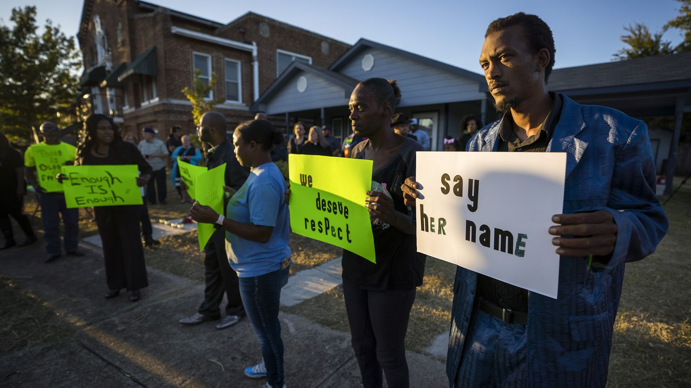

Just like Breonna Taylor's case, Atatiana was at home, sleeping after a police fired one shot to kill her instantaneously. This happened at night, when Jefferson's house doors were open and has lights on. Because of this, her neighbor was concerned of a break in and called the police for help. Once the police came, he peeked throught the window and ask for someone in there to put their hands up without even caution that he is a police. Without even finishing telling to put a suspecting someone to put their hands up, the officer pulled the trigger of his gun and killed Jefferson while she was sleeping. Because of this event, Jefferson's neighbor was so guilty of the happening as he said that it wouldn't happen if he didn't called the police.

On this report, the whole incident was explained and also reported that the policee officer who killed Atatiana is now arrested. This still doesn't hide the fact that police brutality still needs much more severe consequences for the brutal killings they have caused in history. Click Jefferson's picture to see the report.
Here are social media links related to the Black Lives Matter Movement. Also above, is the link for the official BLM website.
image sources: https://interactive.aljazeera.com/aje/2020/know-their-names/index.html, https://www.dallasnews.com/photos/2019/10/14/photos-vigil-and-protests-for-28-year-atatiana-jefferson-who-was-fatally-shoots-by-fort-worth-police-in-her-home/